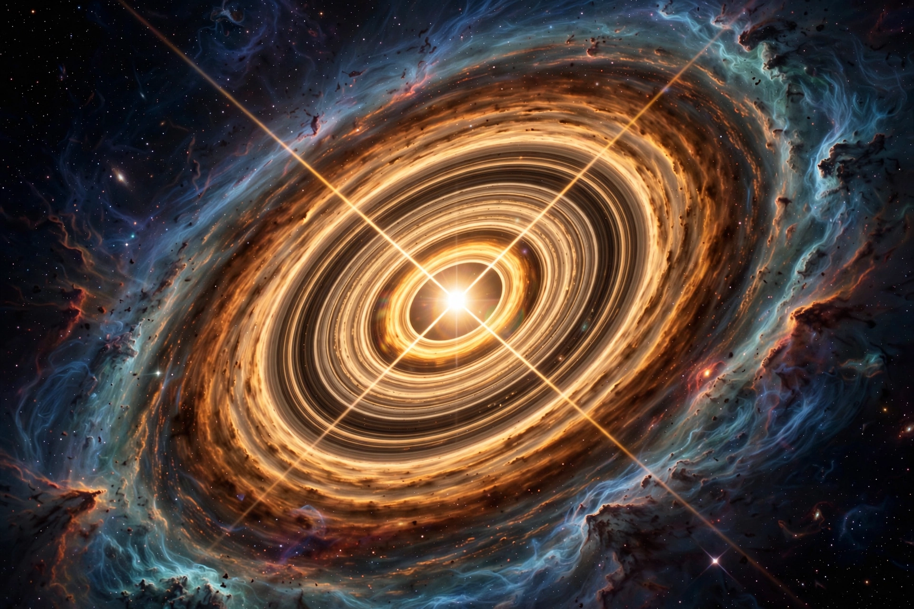

A protoplanetary disk is a rotating circumstellar disk of dense gas and dust surrounding a young newly formed star, a T Tauri star, or a Herbig Ae/Be star. It is the reservoir from which planets form.
When a molecular cloud core collapses under gravity, conservation of angular momentum flattens infalling material into a disk. Disks are typically tens to hundreds of astronomical units across, mostly hydrogen and helium with about 1% dust by mass, and live for roughly 1–10 million years before gas disperses by accretion, photoevaporation and planet formation.
Dust grains collide and stick, growing into pebbles, planetesimals and protoplanets; in the core-accretion model a rocky core of several Earth masses then captures a gas envelope. ALMA images since 2014 (e.g. HL Tauri) reveal concentric rings and gaps, often interpreted as signatures of forming planets sculpting the disk.